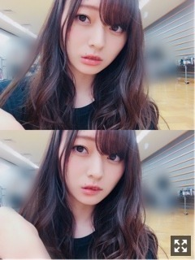
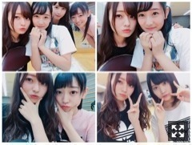
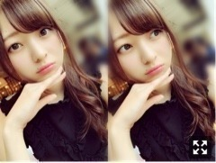
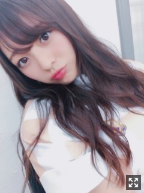

みみが幸せ〜。梅澤美波
みなさまこんにちは！！
乃木坂46 ３期生の
梅澤美波です！！！
髪の毛ボサ子。
少しだけ色落ちしてきました〜
暗い髪色好評だったから
できるだけ美容院通ってキープできるようにがんばる
夜行列車乗りたいな〜
って最近考えてる
夜の景色見ていたいの〜ずっと。
なんだろう夜景ってすごく惹かれるの
あと、大阪の帰りの新幹線で
窓の外見てたそがれてたら
花火が上がったの！今年初花火でした◎
ちゃんと見に行きたいなあ
この間お仕事とお仕事の間が
結構時間空いたからお洋服お買い物行ってきた☺︎
最近は１人でお買い物が多いかなあ
わりとすぐ決めたら買う人なんだけど、
そのせいか
買っても着ないことが結構増えちゃって
だから最近は慎重になったよ( ¨̮ )
お洋服の意見は誰かに聞きたくなるけど
ほとんど１人で決めちゃう( .. )
お気に入りのものが買えたよ〜
けどまだまだ足りない、、、
またいってきまーす
誰か一緒いこ〜( .. )( .. )
本日はTIFでした！ついさっき終わった！
ずっと今日を楽しみにしてた！
まさかこのTIFに自分が出る日がくるなんて！
何年も毎年開催されていて
たくさんのアイドルさんが出演されているのに
初出演の私たちが
最終日の最後のステージを飾らせていただけて
本当に光栄です、幸せでした。
盛り上げよう！楽しもう！
私たちを知らない方にも興味を持ってもらえるように！
って、必死に頑張りました。
盛り上げられたかなあ( .. )？
たくさん刺激をうけた１日だったなあ
私たちが背負ってる"乃木坂46"っていう
看板は物凄く大きくて
その看板を背負って、
今３期生で色々なところで単独のお仕事させていただいてたりするから
期待に応えたいって思うし、
しっかりしないとっていう意識がすごくあります
みんなが同じ気持ちで
同じぐらいの熱でやらなきゃ意味がなくて
どんなにおおきなステージに立っても
なにかを残さないと次がないし
プレッシャーは大きいけど
一つ一つのステージを大切にしたいって思う！
先輩方もサプライズで出演されて、
盛り上がりが本当にすごかったし
先輩方がいると安心感がすごくて、
やっぱり偉大すぎる先輩方だなあと感じました。
少しでも早く追いつけるように
一つ一つの活動を頑張ります！
とにかく燃え尽きました！楽しすぎた！
乃木坂のファンの方だけじゃなくて
色んなグループさんのファンの方がいたから
その方たちに頭の片隅にでも
３期生の誰かがいたらいいなあ。
アイドルさんが好きな私からしたら
今回のイベントは物凄く嬉しかったし
可愛くて輝いてて
本当にアイドルさんってすごい
って思った！
裏でたくさんのアイドルさんがいて
本当に可愛くて綺麗で
なんか本当に癒されたなあ
本当に本当に幸せだった！！
ステージ見に行きたかったなあ( .. )
裏のモニターで少しだけ見れたりしたんだけど
もう最っ高にキラキラしてて可愛かった(；＿；)
自分も同じアイドルなんだけど
まだまだ及ばないくらいちっぽけだし
どんなアイドル像を目指すか、歩むかなんて人それぞれだから
わたしはわたしのアイドル像を作りたいなあ
誰かになんてなれる訳じゃないからね
もう１年経つし
初々しいとか新人とか
そうゆう言葉ではもう通用しない
だから、もっと変わっていかないとね◎
また出演したいなあ( .. )
がんばります！

出番１時間前くらい。
心臓ばっくばくだった、、、

みんなと〜
乃木坂46×セブンイレブン
初めて３期生は参加させていただきました！
こうゆうイベントってすごく素敵だなあとしみじみ。
全握の場所と同じ感じだったから
後ろの方見にくかったかな？
サイリウム見えてたよ〜ありがとう( .. )
ありがとうございました！
大阪づくしで大阪住みたくなった☺︎（笑）
舞台に立つのが
すっかり楽しいと思えるようになりました
もちろん緊張しいだから出番前は足ガクガクだし心臓ばくばくだけど
ステージに立つのが楽しくて仕方ない☺︎
はじめの頃は楽しむ余裕はあまりなかったの
人って変わるものですね〜
でも、いつまでも初心は忘れたくないなあ
まさかまた披露できると思わなかった
ハルジオンも、地方で披露できて嬉しかった( .. )
サイリウムが本当に綺麗です、何度見ても泣きそうになる景色。
コールもさ、していただけるのってこんなに嬉しいんだ〜って初めて知れた曲だったから、ジーンとくる
初披露だった３期生曲、未来の答えも
みんなちゃんと見てくれたかな？( .. )
楽しすぎる！こんなふうに思えてる自分に変わったなと思う！すごい！みんなのおかげ！
ダンスコーナーからの
インフルエンサー
ここにいる理由
命は美しい
ここのセトリ最高で最強！
踊ってて最高に楽しいし
かっこいい曲だいすき！
最高に楽しかったよ、皆様本当にありがとう
熱気がすごく伝わってきたし
後ろの方見えにくかったかもしれないけど
サイリウムちゃんと見えてたからね☺︎
またできるといいなあ
質問コーナー◎
Q.最近聞く曲は？
A.ん〜Aimerさんは相変わらずたくさん聞くし、三浦大知さんもめちゃくちゃ聴きます、歌声が最強にすき。あとは東京女子流さんのpredawnをずっと聴いてたりします〜。好きになったらずっとそれ、ずっとリピート人間です、幅広く聴くけどね☺︎
Q.夏休みの宿題は先にやる派？後にやる派？
A.夏休み終わって提出期間までにやるダメ人間でした、、
Qこの夏１番したいことは？
A.花火大会行きたい！
次いつSHOWROOMできるかわからないんだけど、
前回書いたお悩み相談もやるから
ある方は考えておいてね〜◎（笑）
告知◎
◎紙面〜
▽７／２０ ヤングジャンプ さま
ソログラビア
▽７／２４ B.L.T. さま
いおりさん、ちはるさんと
▽７／２９ 月刊エンタメ さま
新内さんとペアグラビア
発売中です！！
▽９／４ 日経エンタテインメント さま
３期生全員で撮影しました！わちゃわちゃしてて楽しかったな〜皆様ぜひ☺︎
▽９／２４ Samurai ELOさま
美女散歩の連載出させていただきました〜☺︎
ELOさま２回目です〜最高に嬉しかった(；＿；)カジュアルな格好がどタイプでした、◎やっぱりELOさまで着るお洋服はツボです、好きです、
ーーーーーーーーーー
▽８／２７、９／１０、１／６
18thシングル全国握手会の
日程と会場が発表されました〜！
１番近くて８月の幕張！
あとは９月の名古屋と１月の大阪！
ペアは誰になるのかな〜わくわく
ちょっと離れてるけどみんな待ってんで〜◎
▽8／１１.１２.１３ 全ツ@宮城
いよいよ近づいてきた〜☺︎☺︎お楽しみに！
▼３期生曲"未来の答え"MV公開！
MV見てくれましたか〜？？
学校にて撮影しました！最高に楽しかった！
なんだか学生に戻った気分だったよ〜(制服似合わないとか言わないでお願い自分でもちょっと分かってた
こんな可愛い子達が周りにいる学校
たぶんそわそわしちゃって慣れなそう◎（笑）
三番目の風のMV撮影時は
全員一緒のカットが少なかったけど
今回物凄く多くてわちゃわちゃしてて楽しすぎたんだよ〜
浴衣着たりね、めちゃくちゃレアだね
大切で仕方がない作品です。
今の私たちにぴったりなんじゃないかな〜、と。
皆様にとっても
元気を与えられたりだとか、なにかのきっかけの曲になったら嬉しいです！
音楽の力は偉大だからね〜◎

なんだこの手は
地方に行ってホテルに行くと
珠美は必ず私の部屋にくる、
寂しがり屋なのかみなみのことが好きなのかどっちなのかな〜( ¨̮ )
この前たまみとかき氷行った！
あとかえでとたまみとピザたべた！
自分より人のことを気にしてくれる葉月
ニコニコスマイル〜ってしてから
ステージに上がります( ¨̮ )
今日も☺︎☺︎
誰にだって目指していい場所も
立っていい場所も絶対あると思うの、
ここがこうだから私はこの場所に向いてない
ってずっと思ってた時もあったけど
そんな事言ったらなにもできないし
目指す場所だって無くなってしまう、
誰に何を言われようが何を思われようが
私は与えていただいた場所を大切にしたいし
ここで頑張ってもっと目指す場所を目標を明確にしたいって思ってる
ファンの方と一緒にアイドル活動作っていきたいし、
悔しい悔しいって思ってきたことも沢山沢山山ほどある、けど、実際それも今パワーになってるのは間違いないの
全部共有できたら素敵だなって思う☺︎！
自分がどんなモノを持っていて
どんなものに囲まれて
どんな立場にいるかとか
前回も言ったけど大体理解はしている、その壁を超えられたらすごいよね、
たまにふとしたときに
何年後かの自分がどうなってるのか
怖くなるときがあるんだけど
そんなのも今何するかで全然変えられるんじゃないかなって思うの
今までやってきたことに無駄なことは無いとおもってる
梅澤はがんばりますよ〜、まだまだ。☺︎
堂々とできるように、なりたい
花奈さんお誕生日おめでとうございます☺︎♡
いつも３期生を気にかけてくださって、
優しく話しかけてくださるかなさん、
本当に嬉しいです、いつもありがとうございます(；＿；)
素敵な1年にしてください☺︎♡
全国ツアーがもうすぐスタートします、
きっと８月は風のように去ってゆくんだろうなあ
去年の夏のこと思い出すと、
とっくの昔の事のように感じる、それくらい毎日が濃い
毎日を楽しみます、
最高の夏にしようね☺︎

ぶれぶれ〜
こっちの角度全然載せないから珍しく◎
じゃあまたね〜
いい夢見ろよ〜
いつからか変わってしまった自分が、自分で怖くなるときがあります
でも、自分は自分だし、わたしはそんな器用な事はできないから、例え損だとしてもそれでいい、正直でありたい
色んな場所で違うところで、違う状況でみんな頑張ってるんだよね、コメントみると元気でるよありがとう
みんな一緒にがんばろな〜
Original：https://www.nogizaka46.com/s/n46/diary/detail/40194?ima=0524&cd=MEMBER